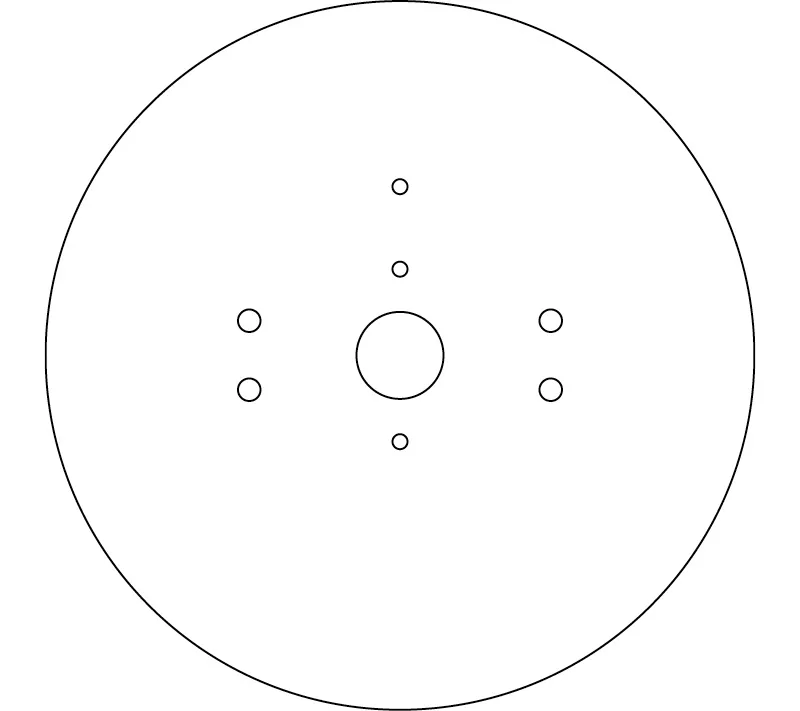
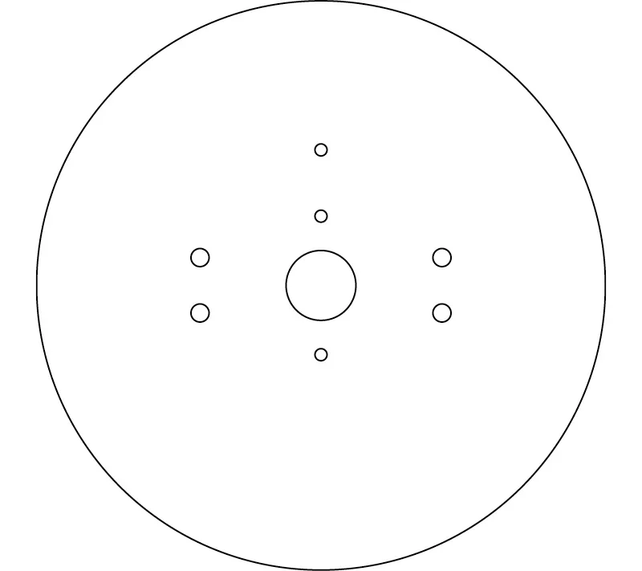
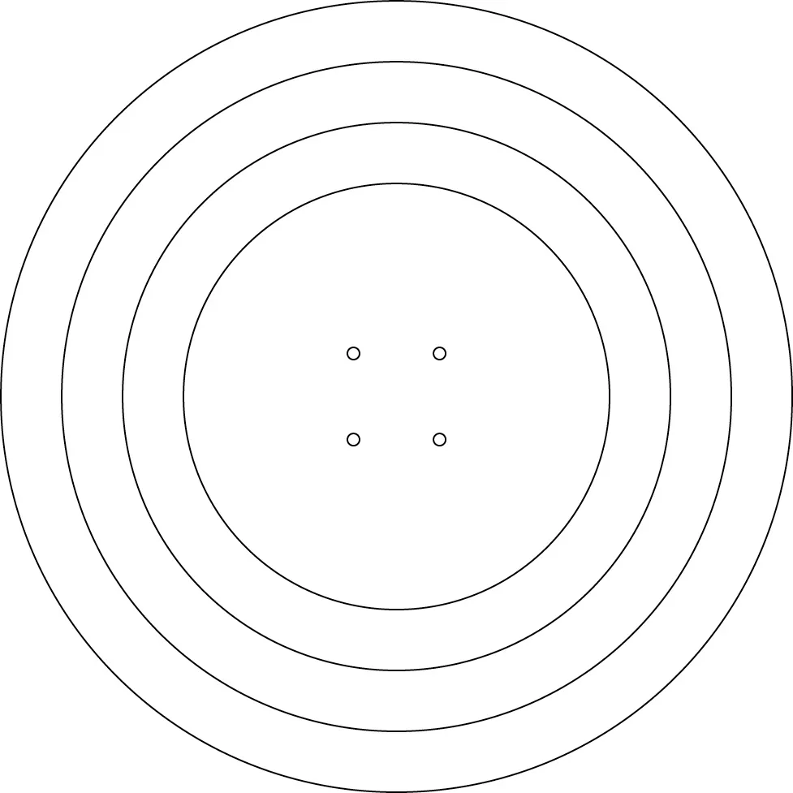
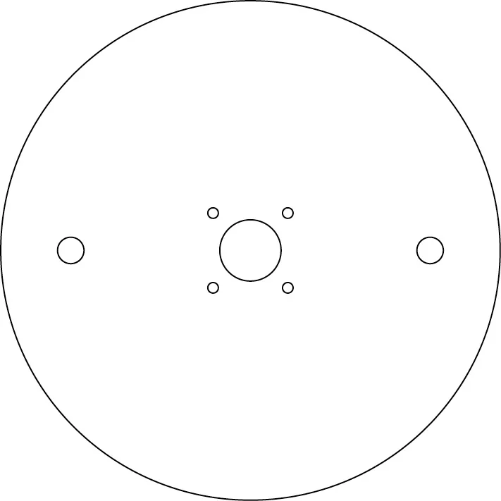
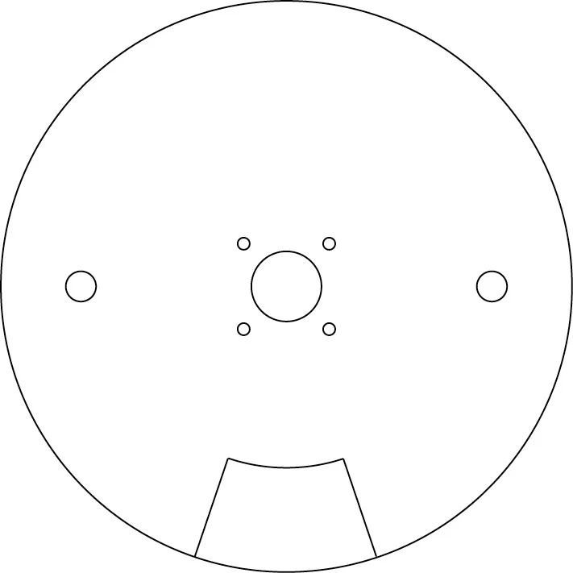

In this appendix, I’ve included the templates needed to make Barreller, Daze, and Walker. The easiest way to use these templates is by placing a regular sheet of white printer paper over the page and tracing the outlines with a pencil. Once you have traced the template onto the sheet of paper, you can cut it out and tape it to the part you are trying to cut or drill. For downloadable and printable versions of these templates, you can visit http://www.randysarafan.com/ or https://nostarch.com/homemaderobots/.
Barreller


Daze

Walker

